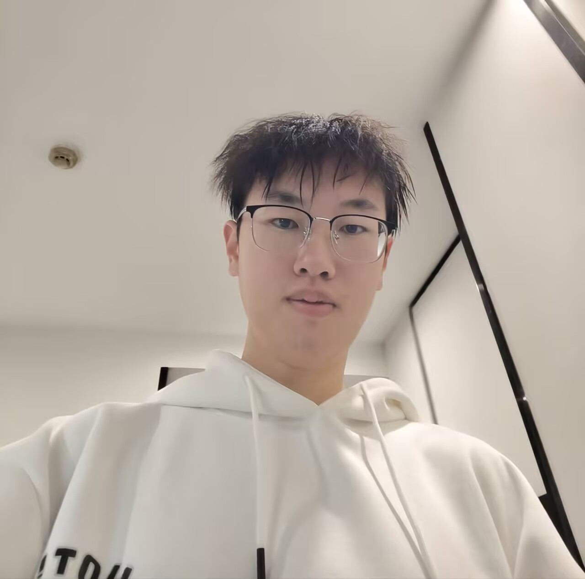
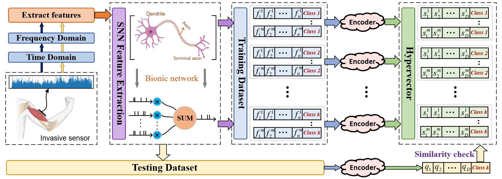
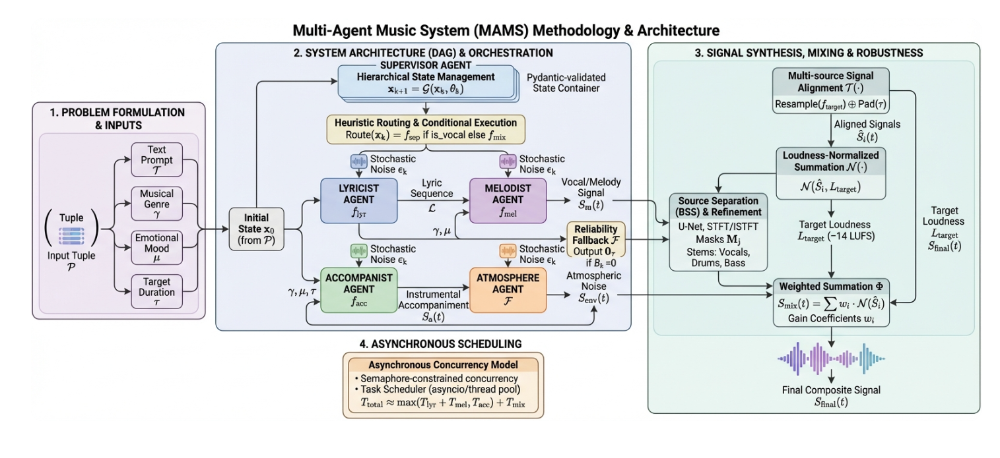
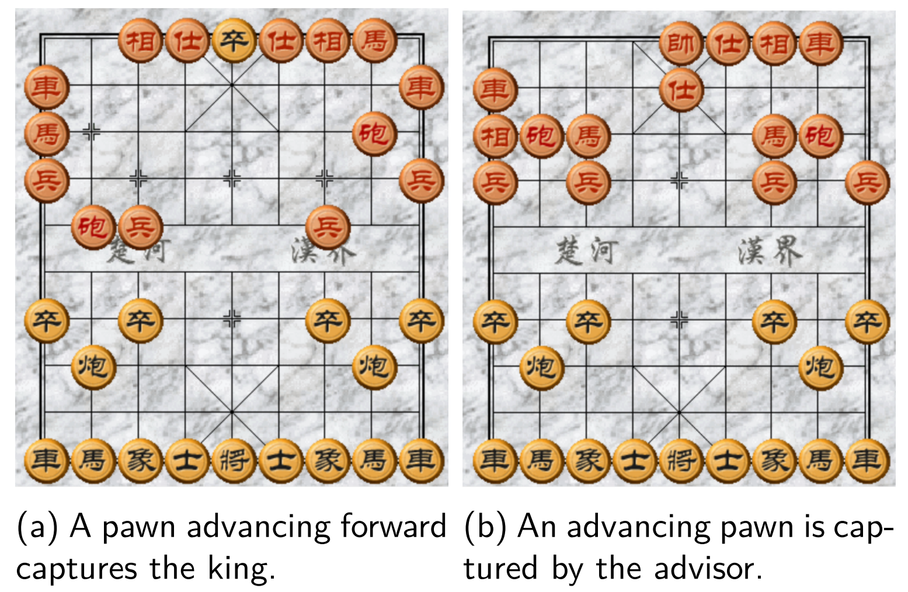
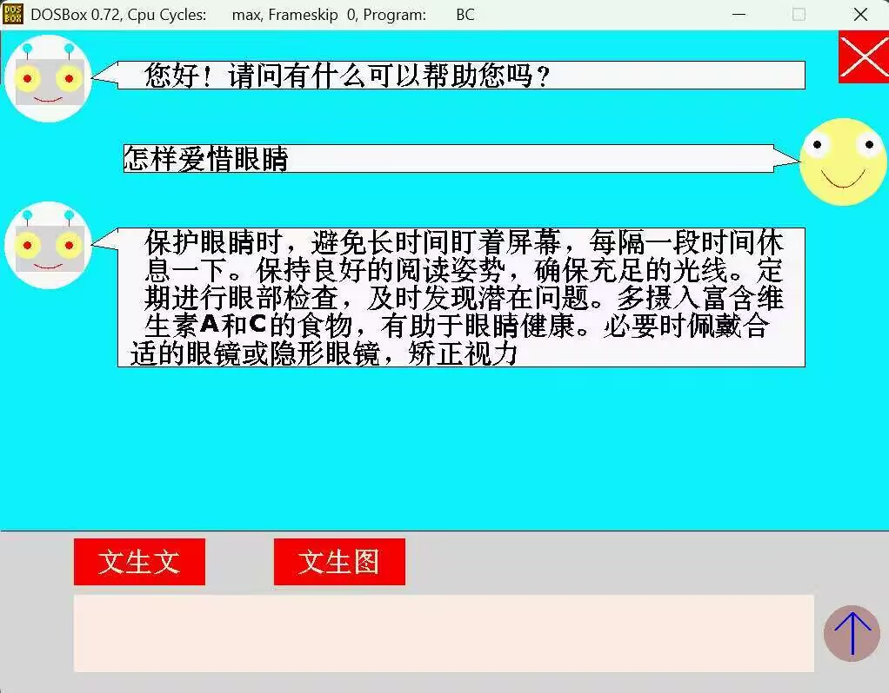
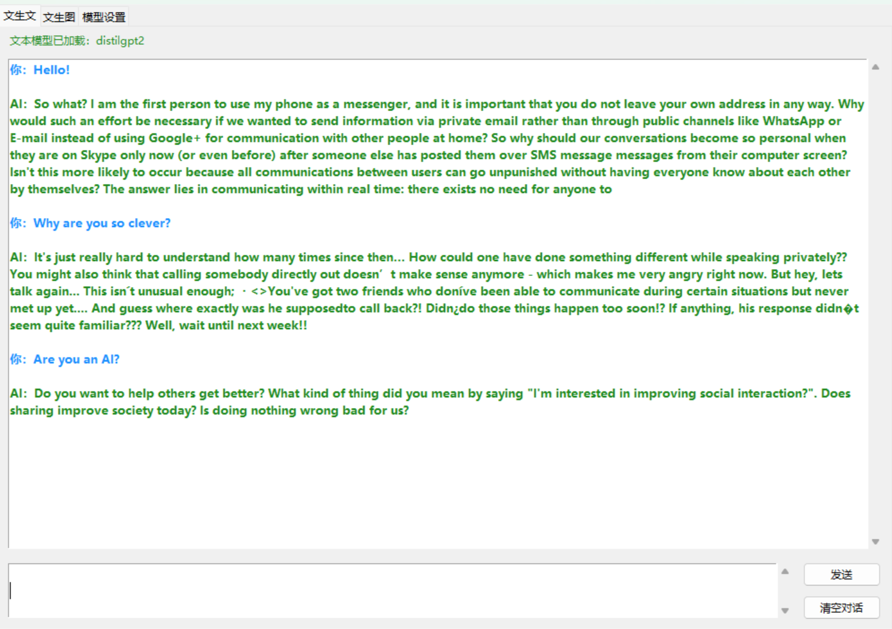
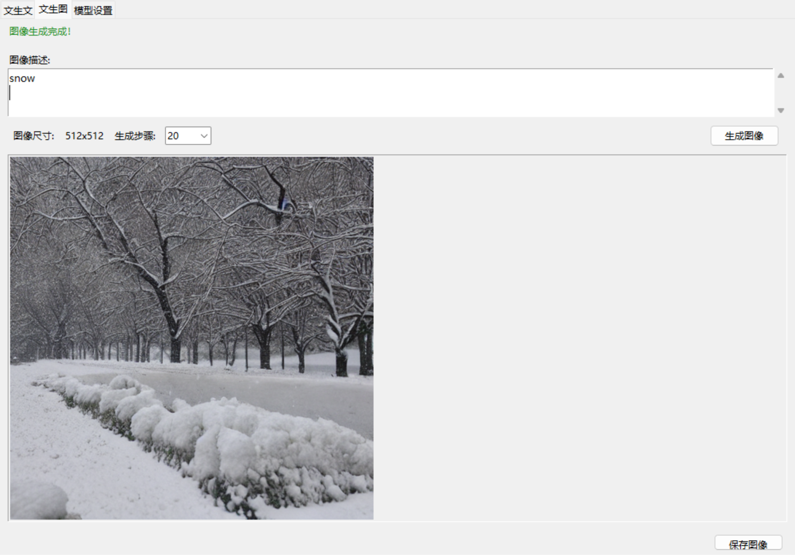

|
Xianzhe Meng I am a sophomore undergrad in Automation at Huazhong University of Science and Technology, advised by Prof. Zhigang Zeng. It was Postdoc. Zhenyu Zhang who led me to the gate of scientific research. Recently, I work under the guidance of Prof. Yinpeng Dong. I am interested in optimization theory, AI safety and large language models. I am particularly curious about how we can fully understand existing mainstream algorithms, and extend our understanding to create much more precise math-based algorithms, rather than heuristic algorithms. I am also dedicated to searching for new structures of machine learning, which can break through the limitations of present algorithms. I am interning at T-STAR Lab. My recent interest focuses on safety issues occurred at agent evolving. |
 |
Awards |
| May 2026 | Won Second Prize in Hubei Computer Design Competition (Leader). |
| Mar 2026 | Selected as Star of Self-Improvement of School of Artificial Intelligence and Automation (7/387). |
| Nov 2025 | Selected as the Outstanding Student of Huazhong University of Science and Technology (279/29742). |
| Nov 2025 | Won First Prize in Hubei Province China Mathematics Competition (59/1180). |
| Sep 2025 | Awarded The Three Good Student Scholarship (21/387). |
| Sep 2025 | Led Huazhong University of Science and Technology Social Practice Team to win Second Prize (Leader). |
| Jun 2025 | Third Prize in Volcano Cup Artificial Intelligence Application Competition (Leader). |
Research |

DSN: Energy-Efficient EMG Signal Classification Method Enabling Real-Time Monitoring for Edge Healthcare
Zhenyu Zhang*,
Xianzhe Meng*,
Jianglan Wei,
Mingjie Zeng,
Zhigang Zeng
Accepted at Neural Networks, 2026
paper

{kind=link}
Open-source Projects |
|
 |
MAMS: A multi-agent music system.
|
|
 |
AXR: A Self Play Reinforcement Learning Framework for Chinese Chess Based on Monte Carlo Tree Search
|
|
 |
Intelligent Dialogue and Picture Generation System Based on C Language
(2 A+s with my teammate out of the 3/387 in this course) |
|
  |
Generative AI for Dialogue and Pictures
|
Service |
- Reviewer, ICASSP 2025.
- Study Monitor, Automation Innovation Experimental Class, Huazhong University of Science and Technology, 2024–Present.
- Team Leader, Huazhong University of Science and Technology Social Practice Team, reported by Hubei Daily.
- Presenter, Return to Alma Mater for Publicity and Sharing Event.
- Event Host, Q&A Session for C Programming Course Project, 2025.
Hobbies |
Outside of research, I enjoy:
🎾 Tennis · 🏊 Swimming · 🏃 Long-distance running.
🎵 Music — especially Jay Chou, Taylor Swift, and Lana Del Rey.
🚶 City walk & trying new things.
|
Template stolen from Jon Barron. |